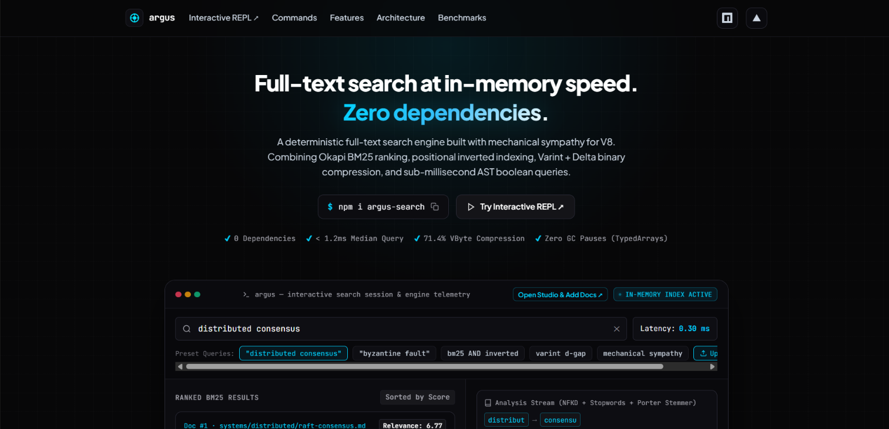
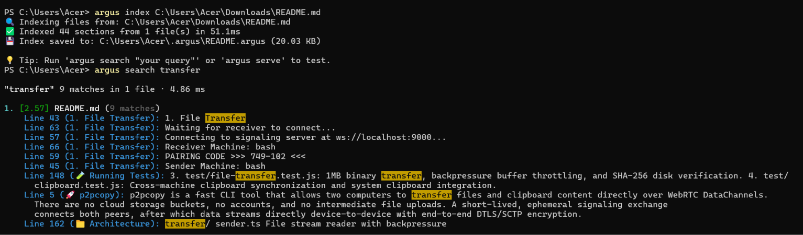
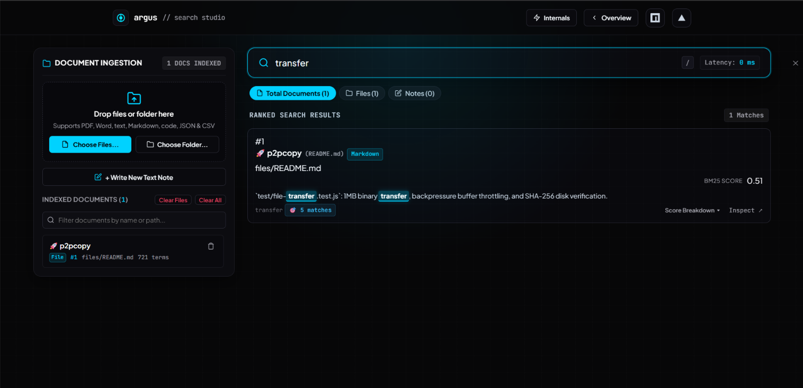

Building Argus: Zero-Dependency Embedded Search Engine
Argus is a high-performance, deterministic full-text search engine engineered entirely from first principles in TypeScript. Designed with strict mechanical sympathy for the V8 runtime and modern JavaScript engines, Argus operates with zero third-party runtime dependencies. It features inverted positional indices, custom binary serialization with Delta and Variable-Byte compression, Okapi BM25 ranking, and an AST-based boolean and phrase query evaluator.

The Motivation: Why Build a Search Engine from First Principles?
Full-text search in modern web applications typically offloads retrieval to heavyweight remote daemons (Elasticsearch, Meilisearch) or pulls in opaque WebAssembly binaries. In many embedded contexts—such as local CLI tools, edge workers, and client-side web apps—these solutions present significant hurdles:
- Operational Overhead & Network Latency: Remote search services introduce network round-trips, separate infrastructure clusters, and complex provisioning pipelines.
- Heavy Footprint: Native binaries and heavy libraries add megabytes to distribution bundles and complicate cross-platform deployment.
- Lack of Determinism & Runtime Sympathy: High-level wrappers frequently trigger erratic V8 garbage collection pauses, deoptimizing hidden classes and allocating excessive intermediate objects.
Core Engineering Principles
Argus was built from scratch around five strict architectural tenets:
- Zero Runtime Dependencies: From Unicode character normalization and Porter stemming to binary bit packing and MinHeap priority queues, every component is authored in-house.
- Mechanical Sympathy for V8: Monomorphic call sites, packed continuous typed arrays (`Uint32Array`), and zero-copy byte views prevent engine deoptimizations and GC churn.
- Compact Binary Storage: Inverted postings lists are compressed using delta encoding (D-gaps) and Variable-Byte (VByte) varints, reducing index sizes by up to 75%.
- State-of-the-Art Relevance Ranking: Employs Okapi BM25 scoring with exact term saturation, document length penalization, and Robertson-Spärck Jones inverse document frequency.
- Rich Query Semantics: A formal lexer and recursive-descent parser build an Abstract Syntax Tree (AST) that evaluates boolean logic (`AND`, `OR`, `NOT`), prefix matching (`distrib*`), and positional phrase validation (`"distributed consensus"`).
End-to-End Ingestion & Query Architecture
Argus separates the document lifecycle into an ingestion pipeline (character filtering, tokenization, stemming, inverted indexing) and an evaluation pipeline (AST parsing, candidate scoring, Top-K heap extraction):
Query Lifecycle & AST Evaluation Plan
When a search query is submitted, Argus parses the token stream into a hierarchical Abstract Syntax Tree before scheduling postings list intersections:
Technical Deep-Dive: Core Subsystems
1. Inverted Index & Positional Postings
At the heart of Argus is a positional inverted index. Every unique term maps to a postings list recording document occurrences along with exact word offsets:
interface Posting {
docId: number; // Monotonically increasing document ID
termFrequency: number; // Occurrences in document
positions: number[]; // 0-indexed word offsets for phrase verification
}
To speed up multi-term conjunctions (AND queries), postings lists maintain skip pointers positioned at intervals of $\lfloor\sqrt{L}\rfloor$. This allows the evaluator to skip non-matching document blocks in $O(\min(N, M))$ time rather than scanning every entry linearly.
2. Binary Compression: D-Gaps & Variable-Byte Encoding
Storing raw 32-bit document IDs for dense collections quickly consumes unnecessary memory. Argus applies two complementary compression techniques:
- Delta Encoding (D-Gaps): Replaces strictly increasing document IDs with differences between consecutive IDs:
[104, 108, 125, 160] ➔ [104, 4, 17, 35] - Variable-Byte (VByte) Varint Packing: Encodes arbitrary integers into 7 data bits per byte, utilizing the highest bit as a continuation indicator. Values smaller than 128 compress from 4 bytes down to a single byte.
// Variable-Byte (VByte) integer encoder
export function encodeVByte(value: number): number[] {
const bytes: number[] = [];
while (value >= 128) {
bytes.push((value & 0x7f) | 0x80);
value >>>= 7;
}
bytes.push(value & 0x7f);
return bytes;
}
export function decodeVByte(bytes: Uint8Array, offset: { ptr: number }): number {
let result = 0;
let shift = 0;
while (true) {
const byte = bytes[offset.ptr++];
result |= (byte & 0x7f) << shift;
if ((byte & 0x80) === 0) break;
shift += 7;
}
return result;
}3. Relevance Scoring via Okapi BM25
Argus computes document relevance using the industry-standard Okapi BM25 formula with Robertson-Spärck Jones inverse document frequency:
IDF(t) = ln((N - n(t) + 0.5) / (n(t) + 0.5) + 1)
Score(D, Q) = Σ [ IDF(t) * (f(t, D) * (k1 + 1)) / (f(t, D) + k1 * (1 - b + b * (|D| / avgdl))) ]Where $k_1 = 1.2$ manages term saturation and $b = 0.75$ controls document length normalization. Rather than allocating arrays to sort all candidate documents, Argus feeds calculated scores into a fixed-capacity binary MinHeap, guaranteeing $O(N \log K)$ runtime and minimal allocations.
Interactive CLI & Developer Experience
Argus is packaged with a responsive terminal interface allowing developers to index files, execute complex queries, inspect corpus statistics, or launch an HTTP daemon:
npx argus index --source ./docs --output ./indices/docs.argus: Ingests JSON, Markdown, or text corpora into a compiled binary index.npx argus search --index ./indices/docs.argus "query": Executes sub-millisecond AST queries with syntax highlighting and snippet extraction.npx argus stats --index ./indices/docs.argus: Displays document totals, lexicon term counts, and storage metrics.npx argus serve --index ./indices/docs.argus --port 8080: Starts a local zero-dependency HTTP search endpoint.

In-Browser Web Application: Live Interactive Search
In addition to the Node.js CLI, Argus is deployed as an in-browser interactive search engine at argus-search.vercel.app. It compiles and evaluates user queries in real-time with sub-millisecond latency:

Programmatic TypeScript Library API
Argus can be embedded directly into backend services, desktop utilities, or edge runtimes:
import { ArgusEngine } from 'argus-search';
// 1. Initialize Engine with scoring parameters
const engine = new ArgusEngine({
k1: 1.2,
b: 0.75,
stopWords: true,
stemming: true,
});
// 2. Ingest structured documents
await engine.addDocuments([
{
id: 1,
title: "Distributed Systems Architecture",
body: "Consensus algorithms such as Paxos and Raft ensure high availability and fault tolerance.",
},
{
id: 2,
title: "Search Engines from First Principles",
body: "Inverted indexes, postings lists, and Okapi BM25 ranking provide sub-millisecond retrieval.",
},
]);
// 3. Serialize compiled binary index to disk
await engine.commit('./data/library.argus');
// 4. Query with full boolean and phrase syntax
const results = await engine.search('consensus AND "fault tolerance"', { limit: 5 });
console.log(results);